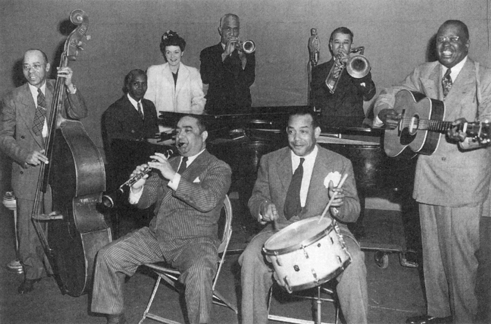
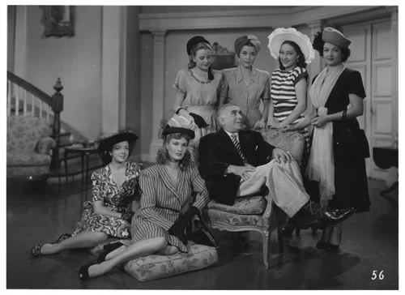

Throwback Swing Ball
Jive, Jitterbug, and Dance ’Til Midnight.
About the Event
Join us for an evening inspired by the golden age of swing, when dance halls were alive with music, style, and unforgettable energy. The Throwback Swing Dance Ball brings together dancers, music lovers, and vintage enthusiasts for a night of big band sounds and lively social dancing. All skill levels are welcome, from seasoned lindy hoppers to complete beginners. Dress to impress and get ready to swing the night away.
What to Expect
- Live Music: Enjoy the lively sound of a live big band bringing the rhythm and spirit of the swing era to life.
- Dancing: Hit the dance floor and try classic swing styles like the Lindy Hop, jitterbug, and Charleston in a welcoming social atmosphere.
- Vintage Fashion: Step into the past with vintage-inspired outfits, from elegant 1940s gowns to sharp swing-era suits and accessories.
Event Schedule
Swing Dancing ~ 6:00
Starting at 6:00 pm when doors open, there will be a practice hour! Experienced swing dance instructors will get new dancers comfortable as they teach you some new old moves!

Live Music ~ 7:00
Our big band begins playing at 7:00 pm sharp!

Vintage Fashion Show ~ 9:00
Come dressed to impress! At 9:00 pm, we have our vintage fashion show. Those who most look like a blast from the past will win fabulous prizes!

Links
Abbreviated Charleston History - Lindy Hop and Swing Dance
Learn a bit about the Gullah Geechee people who created it, why it's called "the Charleston," Runnin' Wild the shows & songs that popularized it, and so much more!
Fashion in the 1940s